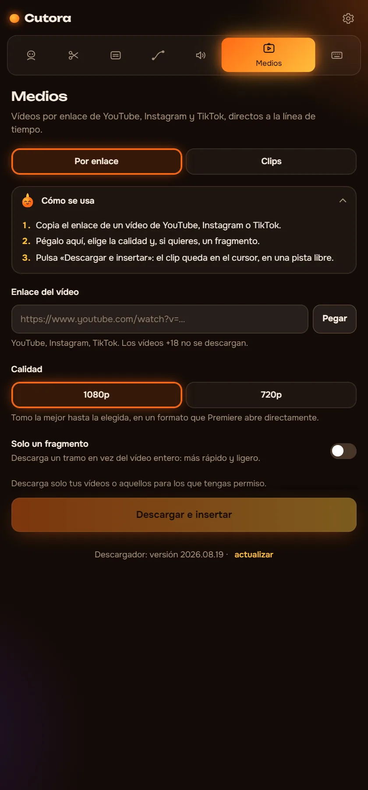

Medios
Pega un enlace, recibe el clip
Trae un vídeo de YouTube, Instagram o TikTok directo a tu línea de tiempo. O toma un clip de pantalla verde del pack incluido y quita el fondo con un clic.

Importar por enlace
Así se ve dentro del panel.
Añadido a tu proyecto1080p, 42 segundos, en la pista V2
YouTube, Instagram, TikTok
Elige la calidad, hasta 4K si la fuente la tiene. El clip se guarda junto a tu proyecto y se importa solo.
Pack de pantalla verde y gameplay
Explosiones, botones de suscripción, efectos y partidas largas. Descarga el pack una vez desde la pestaña Medios.
Fondo fuera con un clic
Cutora conoce el color de fondo de cada clip y aplica Ultra Key con los ajustes correctos.
Se deshace como cualquier edición
Cada inserción es un paso en el historial de Premiere. Ctrl+Z y desaparece.
Todo en un panel por 29,99 $
Seis módulos, un pago, sin suscripción.